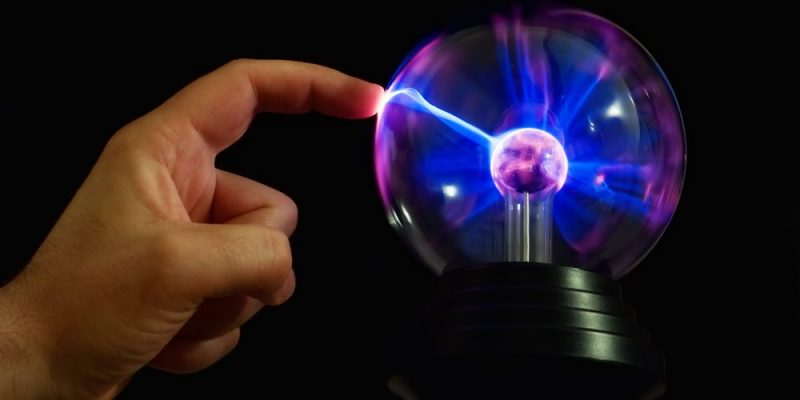
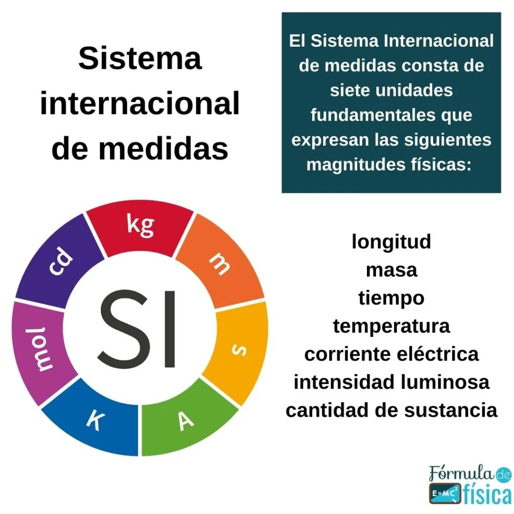
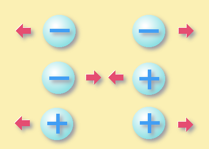
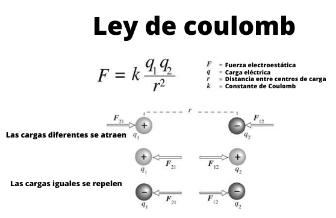
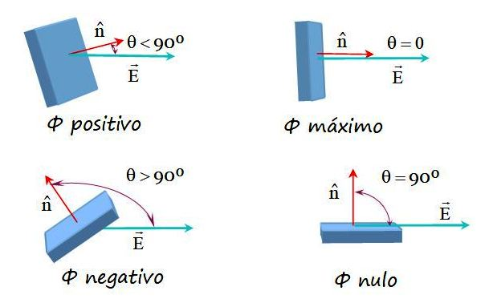
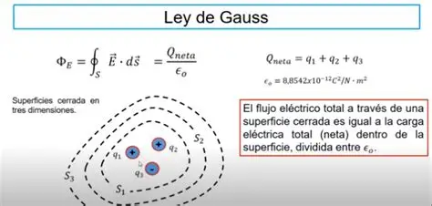
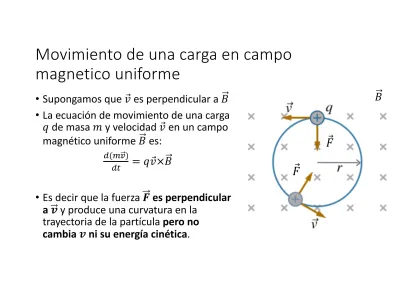

La electrostática estudia las interacciones entre cargas eléctricas en reposo. Incluye fenómenos como la atracción o repulsión entre cuerpos cargados, el campo eléctrico, y el potencial eléctrico. Estos conceptos son base del electromagnetismo y han sido validados desde el trabajo de Coulomb hasta las ecuaciones de Maxwell.

La esfera de plasma demuestra visualmente el comportamiento de los campos eléctricos alrededor de las cargas.
Sistema Internacional de Unidades (SI)
Para el estudio de la electrostática, las unidades del SI más relevantes son:
Carga eléctrica (C): culombio
Campo eléctrico (E): voltio por metro (V/m)
Fuerza eléctrica (F): newton (N)
Distancia (r): metro (m)
Constante de permitividad del vacío (ε₀): 8.85 × 10⁻¹² C²/N·m²

Tabla con las unidades fundamentales del Sistema Internacional (SI), incluyendo magnitudes físicas como longitud, masa, tiempo y corriente eléctrica.
Carga Eléctrica
La carga eléctrica es una propiedad fundamental de la materia responsable de interacciones electromagnéticas. Se presenta en dos tipos: positiva (protones) y negativa (electrones). Se mide en Coulombs (C) y se conserva.

Representación visual de interacciones entre cargas: atracción entre opuestas, repulsión entre iguales. Las flechas indican dirección de las fuerzas.
Ley de Coulomb
Describe la fuerza eléctrica entre dos cargas puntuales:
F = k · |q₁·q₂| / r²
Donde k ≈ 8.99×10⁹ N·m²/C² es la constante de Coulomb.

El diagrama muestra la fórmula de la Ley de Coulomb, la definición de sus variables, y ejemplos claros de cómo se comportan las fuerzas entre cargas iguales (repulsión) y diferentes (atracción).
Campo Eléctrico
El campo eléctrico 𝐸 es una región donde una carga experimenta una fuerza. Se define como:
𝐸 = F / q
Su unidad es el voltio por metro (V/m).
Las líneas muestran cómo se distribuye el campo eléctrico generado por diferentes configuraciones de carga.
Flujo Eléctrico
Representa la cantidad de campo eléctrico que atraviesa una superficie. Se define como:
ΦE = ∮𝐄·d𝐀
Si el campo es uniforme, se simplifica como 𝐄·A·cos(θ), donde θ es el ángulo entre el campo y la normal a la superficie.

El diagrama ilustra cómo el ángulo de inclinación se relaciona con el flujo eléctrico.
Ley de Gauss
Relaciona el flujo del campo eléctrico a través de una superficie cerrada con la carga encerrada:
∮𝐄·d𝐀 = qint / ε₀
Donde ε₀ ≈ 8.85×10⁻¹² C²/N·m². Es útil para determinar el campo eléctrico generado por distribuciones simétricas de carga.

Ilustración del flujo eléctrico saliendo o entrando por una superficie cerrada, mostrando cómo se relaciona con la carga encerrada.
Aplicaciones de la Ley de Gauss
Campo eléctrico de una esfera cargada
Cilindro con densidad de carga lineal
Planos infinitos de carga
Estas aplicaciones permiten simplificar el cálculo del campo eléctrico en situaciones simétricas usando la ley de Gauss, como se detalla en *University Physics* de Sears y Zemansky, capítulo 22.
Movimiento de partículas cargadas en campos eléctricos uniformes
Cuando una partícula con carga q se encuentra en un campo eléctrico uniforme, experimenta una fuerza constante F = qE y describe un movimiento uniformemente acelerado (MUA).
Este fenómeno tiene aplicaciones en tubos de rayos catódicos y en aceleradores de partículas. Se analiza usando las ecuaciones del MUA combinadas con la segunda ley de Newton (F = m·a).

Ilustración del flujo eléctrico saliendo o entrando por una superficie cerrada, mostrando cómo se relaciona con la carga encerrada.
Actividad Interactiva: Sopa de Letras
Refuerza tus conocimientos sobre electrostática con esta actividad interactiva. Encuentra los conceptos clave en la siguiente sopa de letras:
Actividad creada en Educaplay: busca términos relacionados con la electrostática.